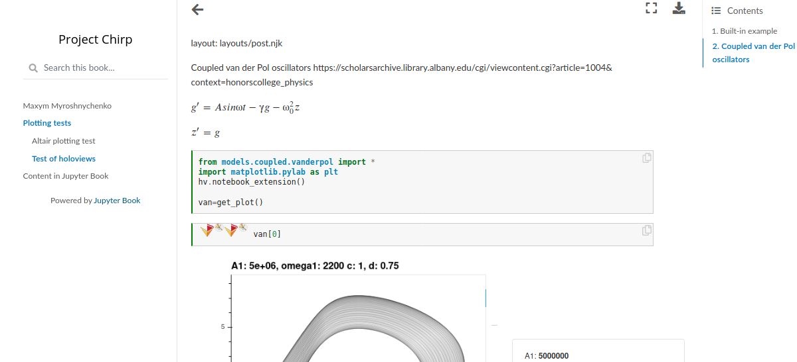

Organizing jupyter notebooks
Contents
Organizing jupyter notebooks#

Problem#
Jupyter notebooks are great, but I hit a few grave problems once I accumulated a handful. Some problems you may encounter:
Remembering what was in each one is a chore
It’s tempting to pile on more and more code into the same notebook. They grow in complexity and size
They break overtime. If they rely on my outside functions, changes in these functions will break the notebooks.
Since they are not typically included in an IDE, spotting errors such as those in problem 3 is nearly impossible unless you re-run them regularly
Notebook anxiety. As consequence of problems 3 and 4, you are not likely to rerun them, because something surely broke down while you weren’t looking!
Some plotting packages’ output (holoviews, Altair) are not always saved as a part of the notebook
Sharing results with collaborators takes an extra step of extracting plots and putting them together in something like pdf or html
Ideal solution would:
Automatically save the output of a notebook in a common, shareable format
Include figures, and not just matplotlib based ones
Keep a running list of what’s in each notebook
Re-run changed notebooks from scratch to make sure all cells are still runable
Make it easy and stress-free to re-run even ones that didn’t change
One command to rerun all relevant notebooks in a project.
Solution: jupyter-book#
Jupyter book addresses all of these problems and then some.
For example output, see my small demo. It’s very easy to set up - really it’s just two commands:
jupyter-book create coolproject and jupyter-book build coolproject, but let’s go through them in more detail.
How-to#
1. Make a new repository#
Let’s call it “coolproject”. Clone it. Navigate to it in a terminal and then:
pip install jupyter-book
jupyter-book create coolproject
This will make the coolproject folder inside your repo. Navigate to it in your terminal and fire up jupyter.
2. Work on some jupyter code#
Say you made awesome_code.ipynb, and it’s related to the topic “wowtopic”. Also create wowtopic.ipynb that only has some text in a markdown cell. You’ll use this to introduce the topic. It can be empty for now.
3. Modify outline#
In addition to awesome_code.ipynb you created in step 2, you’ll find the file toc.yml inside this new folder. Edit it to add awesome_code.ipynb. Since it’s related to wowtopic, you’ll want toc.yml to have:
- file: wowtopic
sections:
- file: awesome_code
4. Compile jupyter code to html#
Go to the top folder of your repository and issue the command
jb build coolproject
That’s it! Now, you have instantly shareable html representation of all your notebooks.
Recap#
To recap, the top-level folder that contains your repo is called coolproject. It has a subfolder coolproject. In it, you have a bunch of jupyter files and toc.yml that organizes them into topics.
The last command above makes all of them into a shareable, interlinked group of html files. Open the file coolproject/coolproject/_build/html/index.html with Chrome or Firefox and never get lost in jupyter files again!
There is an html file in that folder for every jupyter file you put in toc.yml. Share any of them with your collaborators. No need to save figures separately. You can even hide code so it doesn’t get in the way. Perfection!
Extra notes#
add to _config.yml:
execute:
execute_notebooks : cache # Whether to execute notebooks at build ti
me. Must be one of (“auto”, “force”, “cache”, “off”)
cache : “” # A path to the jupyter cache that will be us
ed to store execution artifacs. Defaults to _build/.jupyter_cache/
timeout: 100